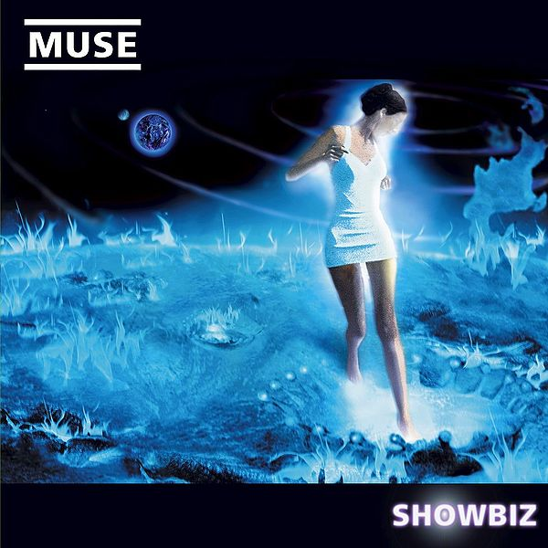
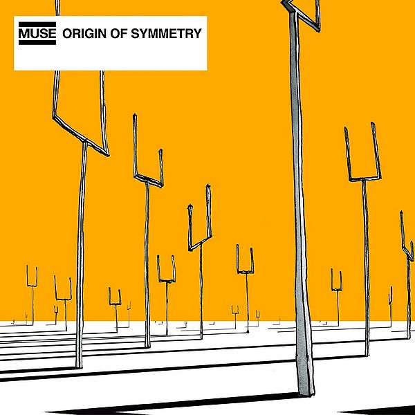
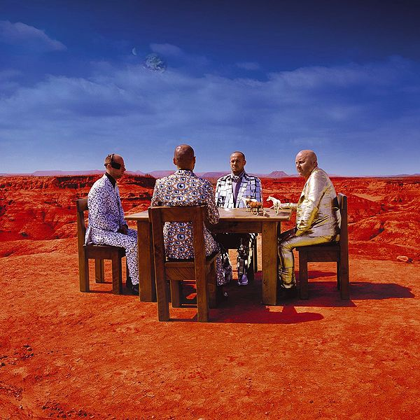
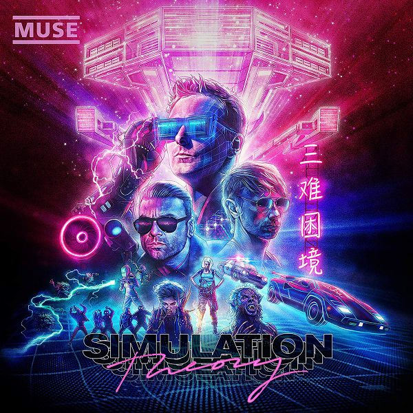

Die Geschichte
1994-1999

Als Teenager waren sie sehr interessiert in Musik und starteten die Band als "Rocket Baby Dolls".
Sie hatten nicht sehr Erfolg mit den Konzerten in Clubs. Später wählten sie den Namen "Muse",
weil der kurz war und der Name gut auf einem Poster aussieht. Weihnachten 1998 bekamen sie endlich
einen Plattenvertrag. In Oktober 1999 wurde das erste Album namens "Showbiz" veröffentlicht.
Es wurde ungefähr 700'000-mal verkauft. Viele meinten es wäre eine "Kopie" von der Band "Radiohead".
2000-2002

Mit dem Erfolg von Showbiz dürften sie auf verschiedenen Festivals in Europa spielen. In Juni 2001
wurde das zweite Album namens "Origin of Symmetry" veröffentlicht. Wegen dem vielen falsetto Gesänge
wurde das Album in Amerika erst später veröffentlicht. Mit der Veröffentlichung vom Album gewannen sie
verschiedene Preise. Das Album ist immer noch eine von den besten Alben die sie gemacht haben. In Juli
2002 wurde ein Live Album von Paris mit verschiedenen B-Sides veröffentlicht.
2003-2005

In September 2003 wurde das dritte Album namens "Absolution" veröffentlicht. Das Album wurde auch sehr viel
gelobt. Sie machten zum ersten Mal eine Internationale Tour. Sie dürften das Glastonbury 2004 Headlinen, es
war eine von den besten Auftritten den sie je gemacht haben. Dominics Vater hat das Konzert miterlebt aber ist
am Ende durch einen Herzinfarkt gestorben. Nachdem ganzen Touren starteten sie die Produktion vom nächsten Album.
2006-2008

In Juli 2006 wurde das vierte Album namens "Black Holes and Relevations" veröffentlicht. Es ist anders aufgebaut als
die älteren Alben mit mehr elektronischen Elementen. In 2007 waren sie einen von den ersten Bands die beim
neugebauten "Wembley Stadium" spielen dürften. Das Konzert war unter einer Stunde sofort ausverkauft.
2009-2011

Das fünfte Album namens "The Resistance" wurde in September 2009 veröffentlicht. Sie haben das Album selber
produziert. Es wurde viel mit klassischen Elementen experimentiert. Das Album ist sehr inspiriert vom George Orwell
Buch "1984". Der Song "Uprising" wurde zum grössten Hit von ihnen.
2012-2014

In Oktober 2012 wurde das Album namens "The 2nd Law" veröffentlicht. Das Album ist sehr anders aufgebaut als die
restlichen Alben auch mit sehr vielen elektronischen Elementen. Das Konzert in Rom wurde gefilmt und man konnte den Film
für eine Nacht im Kino sehen. Den Song "Survival" wurde bei den Olympische Spielen in London benutzt.
2015-2017

Das siebte Album namens "Drones" wurde am Juni 2015 veröffentlicht. Das Album ist ein normales Rockalbum mit ein paar
"Hard Rock" Elementen. Sie machten eine riesige Tour durch fast die ganze Welt. Auch hier wurde bei Konzerten ein paar
Mal gefilmt. Aber der Film konnte man erst im Juli 2018 im Kino anschauen. 2017 kam die erste Single für das achte Album.
2018-Heute

In November 2018 wurde das achte Album namens "Simulation Theory" veröffentlicht. Das Thema vom Album ist die Simulations
Theorie mit 80er Synthwave Elementen. Es ist das erste Album mit alternativen Songs. Die grosse Tour startet in 2019.